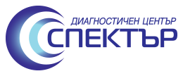

Специализирани прегледи
В 28 ДКЦ приемат лекари по кардиология, неврология, очни болести, ендокринология, ортопедия, акушерство и гинекология, кожни болести, уши, нос и гърло, урология, хирургия, гастроентерология, психиатрия и клинична хематология.
Изследвания
- клинична лаборатория: кръв и урина;
- рентгенови снимки;
- ехография;
- ехокардиография, ЕКГ холтер, холтер за артериално налягане и тест с натоварване.
Диагностичен център „Спектър“
Компютърна томография (скенер), мамография, нискодозов рентген и ехография.

Физиотерапия и рехабилитация
Електролечение, светлолечение, лазертерапия, магнитолечение, кинезитерапия, инхалации, мануална терапия и криотерапия.